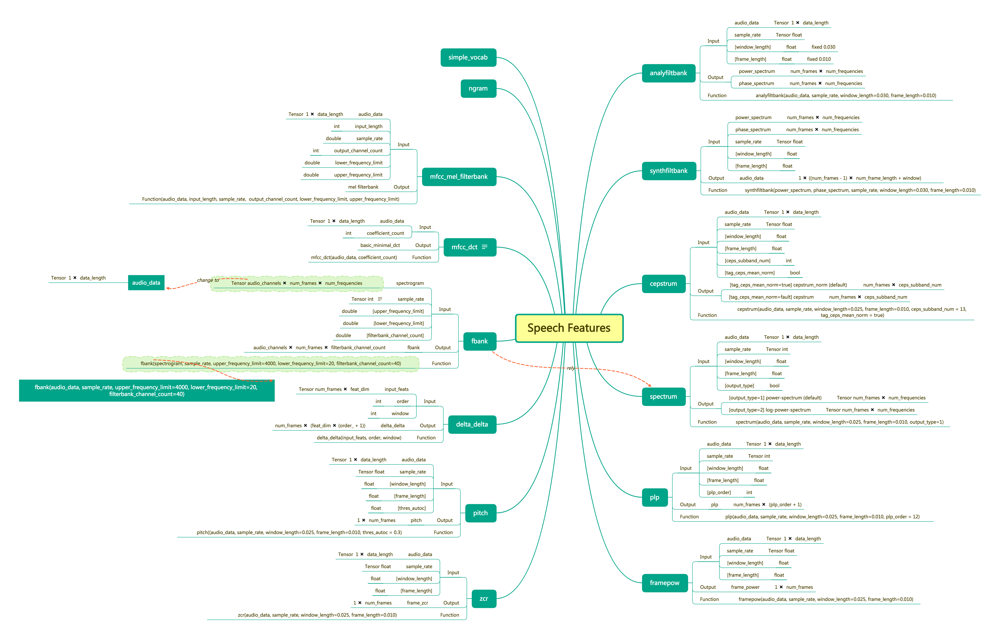
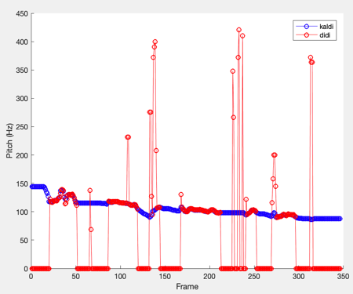
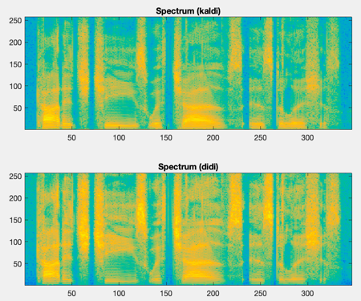
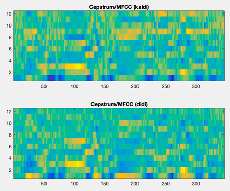
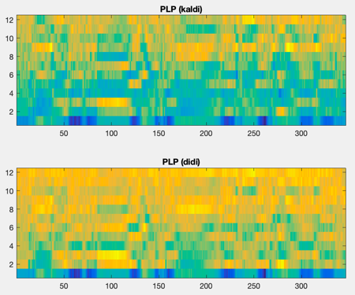

Speech Features¶
Goal¶
Add custom speech feature extraction ops, and compare the extracted features with kaldi's.
Procedure¶
Create custom C++ op, 'xxx.h' and 'xxx.cc'
Files should be stored in delta/layers/ops/kernels/, details can refer to existing files, e.g., pitch.cc / pitch.h
Implement the kernel for the op, 'xxx_op.cc'
Files should be stored in delta/layers/ops/kernels/, details can be found in Tensorflow Guild: Adding a New Op
Define the op's interface, 'x_ops.cc'
Files should be stored in delta/layers/ops/kernels/, details in above link
Compile by using 'delta/layers/ops/Makefile'
Register op in 'delta/layers/ops/py_x_ops.py'
Unit-test 'xxx_op_test.py'
Code Style¶
C++ code: using clang-format and cpplint for formatting and checking
Python code: using yapf and pylint for formatting and checking
Please follow Contributing Guide
Existing Ops¶
Pitch
Frame power
Zero-cross rate
Power spectrum (PS) / log PS
Cepstrum / MFCC
Perceptual Linear Prediction (PLP)
Analysis filter bank (AFB)
Currently support window_length = 30ms and frame_length = 10ms for perfect reconstruction.Synthesis filter bank (SFB)
The specific interfaces of feature functions are shown below： 
Comparsion with KALDI¶
Extracted features are compared to existing KALDI features.
Pitch

Log power spectrum

Cepstrum / MFCC

PLP
